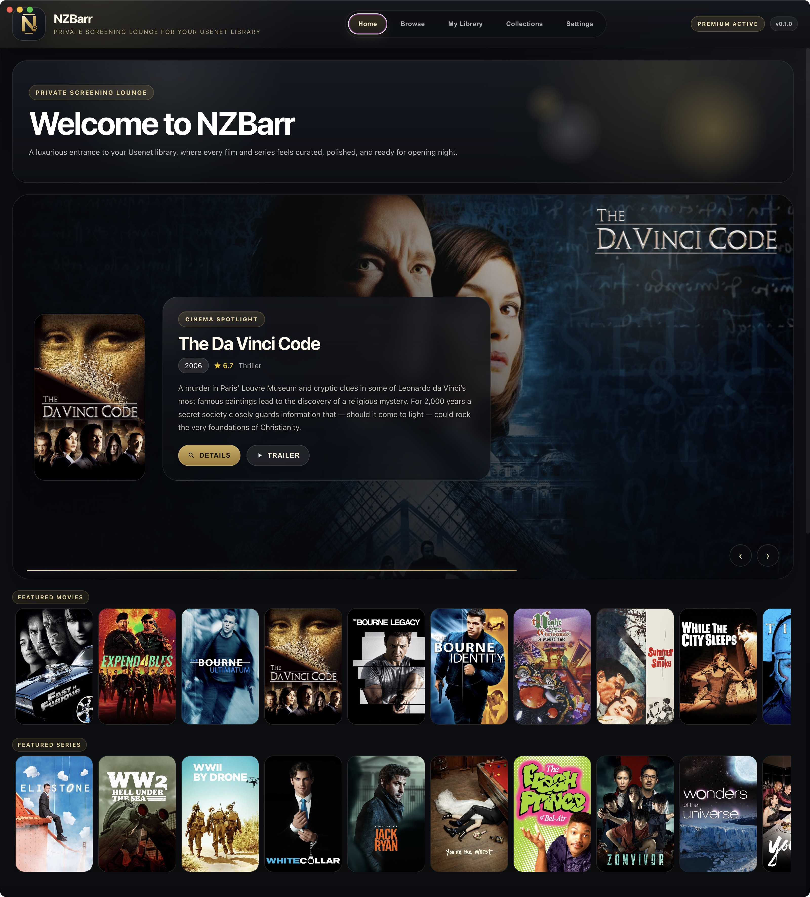
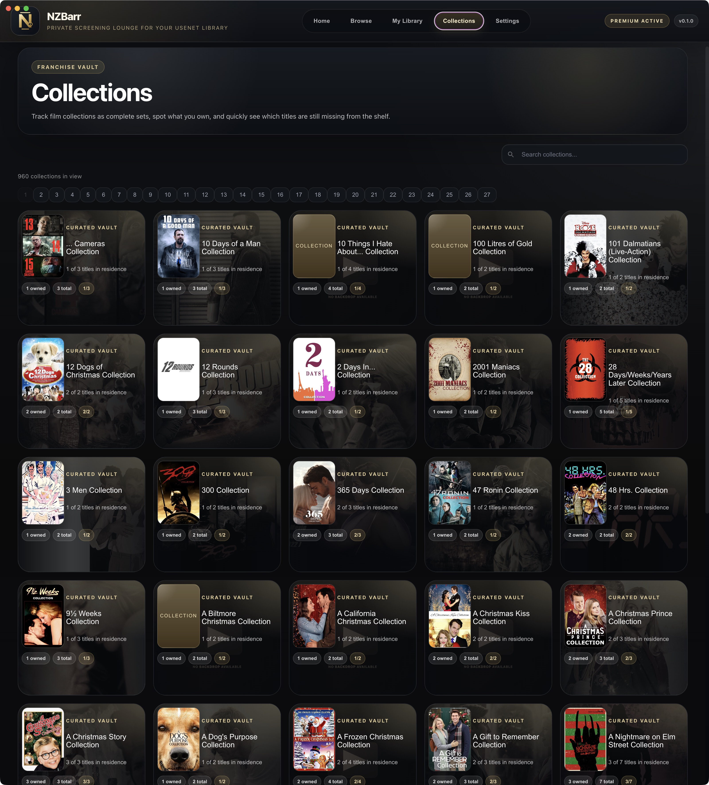
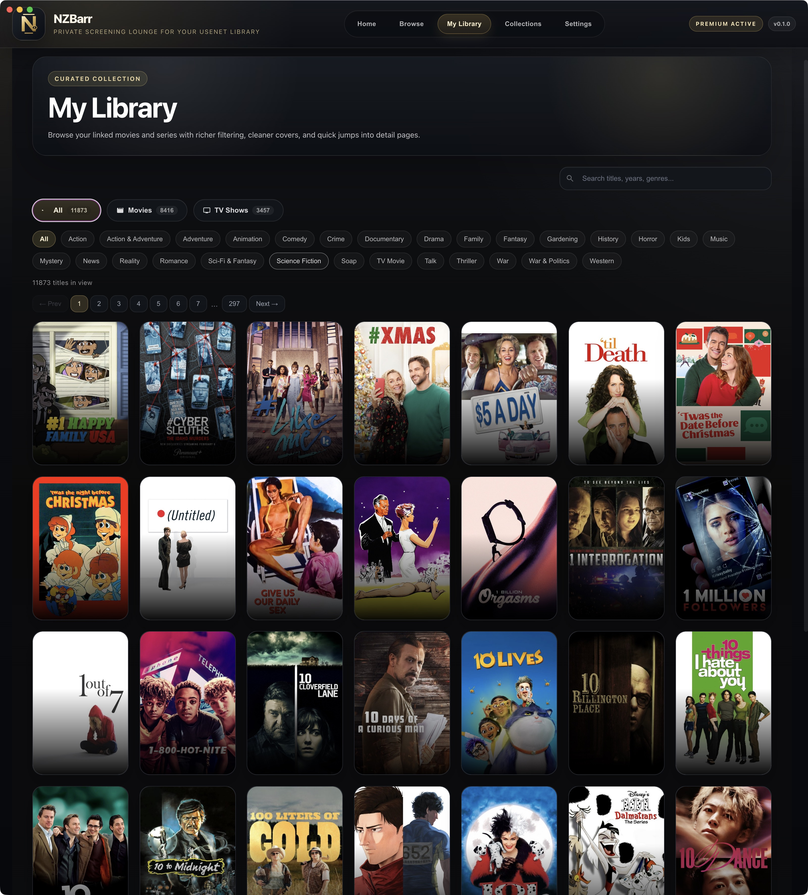
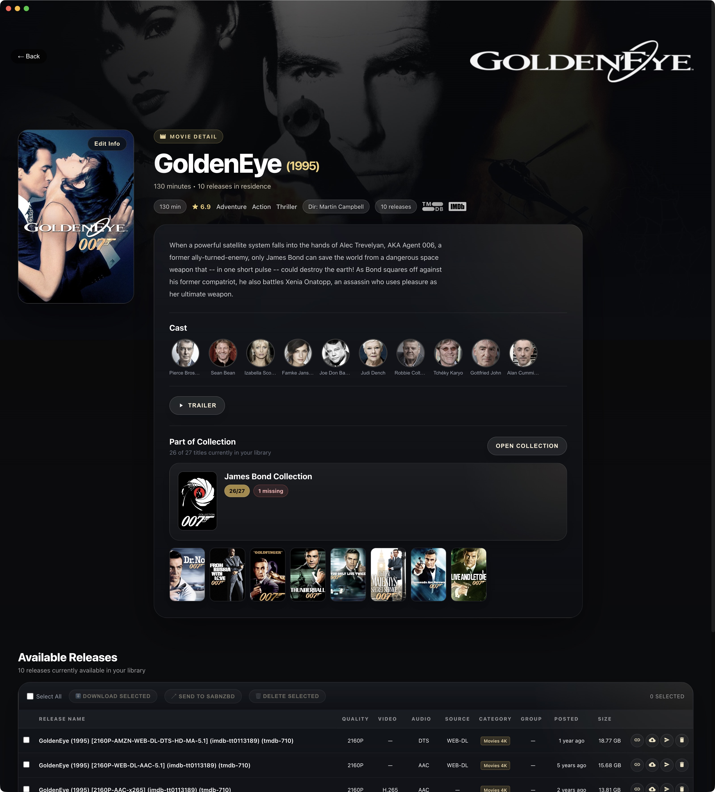
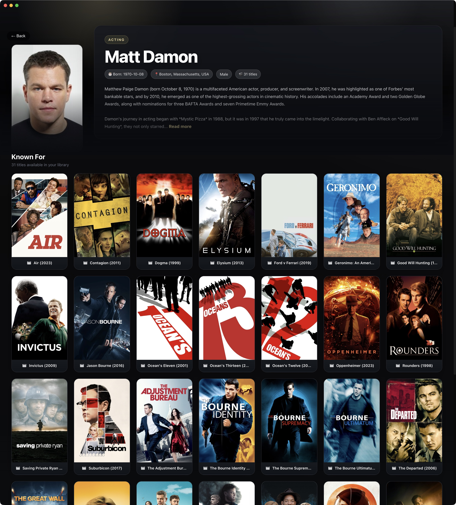
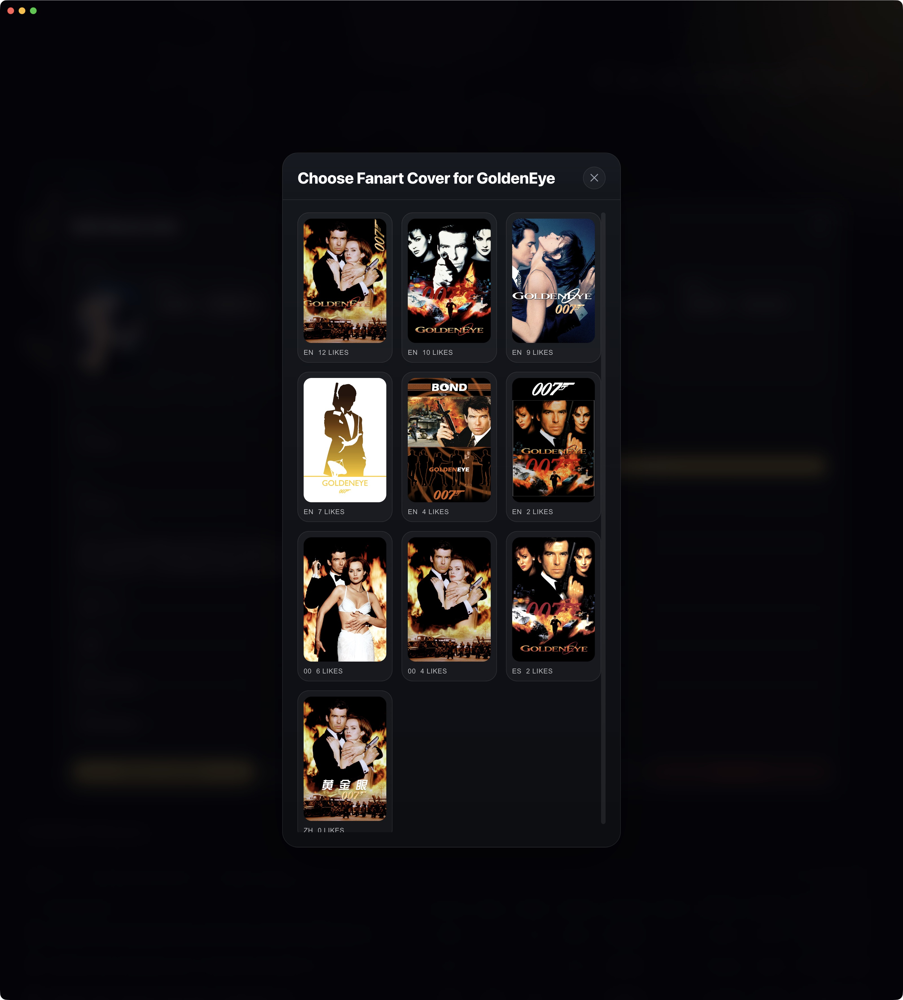

Browse releases
Work from a clean desktop browser that groups releases, linked media, and media-type details in one place.
Usenet, organized like a proper library
NZBarr keeps NZBs, artwork, metadata, and archive handling in one polished desktop workflow so you can browse, prepare, refresh, and manage a media library without the usual clutter.
Why NZBarr
NZBarr is designed for a small, focused audience that values a polished interface, clear feature tiers, and enough flexibility to handle both fresh imports and older archive-style releases.
What you get
Work from a clean desktop browser that groups releases, linked media, and media-type details in one place.
Prepare release names before import while keeping important descriptive text and sensible filename tags.
Re-analyze old or incomplete releases with a capped download pass and fallback metadata parsing when needed.
Keep older releases alive with the auto-refresh workflow, downloader handoff, and re-upload pipeline.
Drop NZB files straight into the app window for a faster import path when you already have the files at hand.
Enter TMDB and Fanart.tv API keys in Settings so NZBarr can fetch covers, backdrops, logos, and richer metadata.
System requirements
NZBarr is built for modern macOS, Windows, and Linux desktops. It is designed to feel native enough to run comfortably across all three platforms.
Have enough local storage for your library, metadata cache, and temporary analysis files. NZBarr also needs internet access for metadata lookups, licensing, and downloader handoff.
To get the most out of the app, point NZBarr at a supported downloader and the helper tools it calls on for refresh and archive analysis.
NZBarr is ideal for users who want a desktop-first library manager rather than a web-only experience or a fully automated TV-style workflow.
Screenshots

The landing page that introduces NZBarr and its main workflow at a glance.

Track sets, spot gaps, and see which titles are already in the shelf.

Browse your linked movies and series with clearer filtering and quick detail access.

View a richer movie detail page with cast, backdrop, and linked release information.

Explore cast pages, discover related titles, and keep the star view visually strong.

Choose the cover that fits best when Fanart.tv has more than one good option.
Quick setup
Configure SABnzbd or NZBGet so NZBarr can hand releases off cleanly.
Needed for matching and richer metadata when importing or editing releases.
Needed for the extra artwork buttons and better-looking detail pages.
MediaInfo, ngPost, and 7-Zip or WinRAR / UnRAR support the advanced re-analyze and refresh workflows.
Start here
The site is organized so new users can understand the basics quickly, while testers and power users can jump into the manuals for the more detailed workflow notes.
Free, Yearly, and Lifetime options in one simple overview.
Setup notes, import guidance, refresh flow, and troubleshooting pointers.
A simple end-to-end library flow for import, browse, refresh, and play.
Practical answers for people evaluating NZBarr or setting it up for the first time.
{kind=link}
{kind=link}
{kind=link}
{kind=link}
{kind=link}
{kind=link}